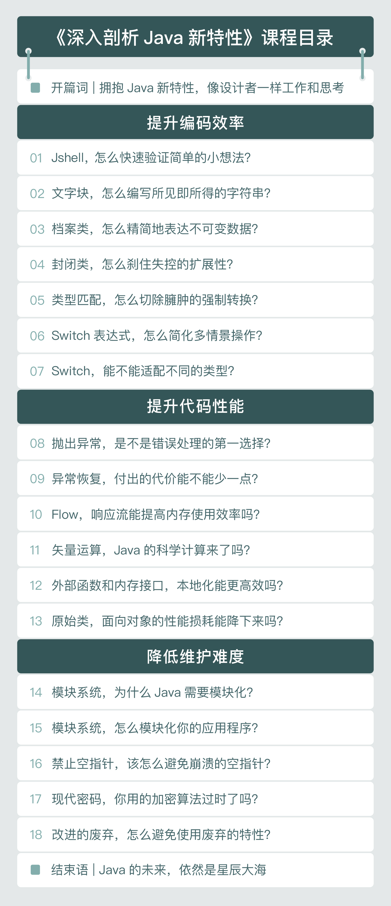

- 00 开篇词 拥抱Java新特性，像设计者一样工作和思考.md.html
- 01 JShell：怎么快速验证简单的小问题？.md.html
- 02 文字块：怎么编写所见即所得的字符串？.md.html
- 03 档案类：怎么精简地表达不可变数据？.md.html
- 04 封闭类：怎么刹住失控的扩展性？.md.html
- 05 类型匹配：怎么切除臃肿的强制转换？.md.html
- 06 switch表达式：怎么简化多情景操作？.md.html
- 07 switch匹配：能不能适配不同的类型？.md.html
- 08 抛出异常，是不是错误处理的第一选择？.md.html
- 09 异常恢复，付出的代价能不能少一点？.md.html
- 10 Flow，是异步编程的终极选择吗？.md.html
- 11 矢量运算：Java的机器学习要来了吗？.md.html
- 12 外部内存接口：零拷贝的障碍还有多少？.md.html
- 13 外部函数接口，能不能取代Java本地接口？.md.html
- 14 禁止空指针，该怎么避免崩溃的空指针？.md.html
- 15 现代密码：你用的加密算法过时了吗？.md.html
- 16 改进的废弃，怎么避免使用废弃的特性？.md.html
- 17 模块系统：为什么Java需要模块化？.md.html
- 18 模块系统：怎么模块化你的应用程序？.md.html
- 用户故事 与新特性开发者对话.md.html
- 用户故事 保持好奇心，积极拥抱变化.md.html
- 捐赠
00 开篇词 拥抱Java新特性，像设计者一样工作和思考
你好，我是范学雷，欢迎加入我的课程。从今天开始，我要用20讲的时间，和你聊聊JDK 8之后Java最重要的一些新特性。
说到新特性啊，有些人可能会不以为然，他们会说：
- 学这些新东西有必要吗？
- 新特性好是好，还是等到用到的时候再去学习吧！
- Java已经老了，为什么我不去学习新语言呢？
- 网上有很多关于Java新特性的文章，为什么还要学习你这个专栏？
我理解为什么会有这样的问题，尽管我持有不一样的观点。
作为Oracle的成员，Java安全的主要推动者和贡献者之一，我从JDK 5开始，就一直在参与Java语言及其标准类库的设计和演进。我的日常工作包括关注信息安全威胁与技术进展，制定与实现Java安全规范，促进 Java 技术的普及与运用等等。
在每一个JDK的版本里，你都能看到大量我共享过和评审过的代码。在这一过程中，我也体验了很多优秀的设计和优秀的代码，见证了代码背后的各种考量和艰难取舍。
比如说，在代码安全性和性能之间，我们该如何抉择？在代码的可维护性方面我们能不能有所提高？API的设计能不能再皮实一点？这些问题，刚开始学习编程的同学可能太不在意，但是解决好这些问题，可以使我们的工作轻松很多。
我还在极客时间上线了专栏《代码精进之路》和《实用密码学》，分享了我在Java和密码学领域的经验。一直以来与Java还有这些新特性的接触，让我对上述问题有过很认真的思考。我认为，学习Java新特性不仅很有必要，而且最好的时机就是现在。
给你一个保守、粗暴的估计，你如果从JDK 8迁移到JDK 17，并且能够恰当使用JDK 8以后的新特性的话，产品的代码量可以减少20%，代码错误可以减少20%，产品性能可以提高20%，维护成本可以降低20%。这些，都是实实在在的收益。
拥抱Java新特性，掌握主动权
为什么我会得出这样的结论呢？
从设计者的角度，我们设计一项新特性，是为了满足新的需求，为了适应更广阔的前景。而这些新特性的优越性，会随着时间的推进越来越明显。
比如说吧，JDK 1.4.2所在的时代，用户的数量还没有这么多，服务器也不需要支持那么多的并发。所以，当时主流的客户端-服务器的设计，是使用阻塞式的套接字接口编程。现在，如果淘宝、京东还使用阻塞式的套接字接口，那是没有一点希望支持双十一的巨大流量的。
Java的有些新技术，甚至能催生一个新行业。比如Java代理的技术，就至少催生了动态监控和入侵检测两大领域的颠覆性变革，并且诞生了数家明星公司和明星产品。Java代理的技术的本意，并不是动态监控和入侵检测，但是用户创造性地使用了这项基础技术，实现了应用技术的关键突破。
现在，Java已经迭代到了JDK 17，不需要依靠内幕消息，我们也能知道，主流企业很快就会拥抱JDK 11或者JDK 17，就像它们曾经拥抱过JDK 7或者JDK 8一样。
所以，不管你拒绝新技术、新特性的理由是什么。跟不上技术进步？认为新技术没有用？你都是时候重新审视它了。可以说，对于致力于创造新价值的我们来说，既然投身于计算机科学的领域，除了拥抱新技术，我们没有别的选择。
如果你因此退却，想要去学习一门新的语言。我也想要提醒一句，两口五尺深的井打出的水，并不一定比十尺深的井里的水甜。
那可不可以等到需要用的时候，再去学习这些新特性呢？
这么听起来好像有道理。但我想你也没法否认，很多技术，你不了解它，它是不会进入你的意识里来的，你也不会知道什么时候该使用它。因为，在你的世界里，它根本就不存在；它要解决的问题，你当然也不是很清楚。
如果你坚持不去了解不去积累，那就丧失了主动性，只能是被动的跟随者，甚至是拖后腿的反对者。而高级工程师和初级工程师之间的差距，恰恰就是积累和见识。你打破脑袋想不出的问题，在别人那里也许看一眼就能解决。
如果可以，为什么不现在就积累呢？尽早成为一个方案的制定者，而不是执行者，不是更好吗？
像Java语言的设计者一样思考
你可能对Java的新特性并不了解，或者已经在网络上看到了很多讲解Java新特性的文章。这些资料可能会告诉你这些新特性的种类、使用方法。但在我看来，了解一个新特性背后的这些逻辑和实际运用，发掘它未来的潜力，远远比学会这个新特性更重要。
在设计新特性时，我们还要考量这项新特性是否能够持续地满足新的需求（Requirement）、增强代码安全（Security）、提高生产效率（Productivity ）、提升产品性能（Performance）、降低维护成本（Maintenance）。
基于这些考量，除了对于单个的新特性的介绍，我还会和你讨论新技术组合的化学反应，比如在第8讲到第9讲，我们会讨论怎么通过封闭类、档案类以及模式匹配的叠加效果，把代码的错误处理性能提高数百倍。
无论你的基础如何，我都可以从新特性设计者的角度带你由浅及深地了解它们，而且可以让你学得更快、更精准、更深入，减少自己摸索的过程，更快地获得竞争的优势。
在使用云计算的时代，每一份性能提升，都是实实在在的成本消减；每一点工作效率的提升，都能为你争取到更多休闲时光；每一份错误的减少，都可以尽快熄灭深夜的灯光。何乐而不为呢？
我们会一起学习哪些新特性？
可是从JDK 9到JDK17，这么多的版本和新特性，到底要从哪里开始学、怎么学才能迅速、精准地抓到这些新特性的精髓，提高工作效率呢？
在这门课程里，我从JDK 9到JDK 17的新特性中筛选出了最核心、有用的18条特性。我会分三个模块给你讲解一般软件工程师需要经常使用的Java语言新技能。
在第一模块，我会给你介绍一些可以提升编码效率的特性，比如说档案类。
可以说，档案类是一个看起来不起眼的小技术。但它却具有巨大的能量。我们的代码里，存在大量的只读性质的数据。没有档案类的时候，我们要想把一个数据正确地表述好，抽象成一个类，需要上百行的代码，还要小心遵守Java的各种规范，比如说比较两个实例的规矩。有了档案类，完全相同的逻辑，就只需要一两行代码了。毫无疑问，档案类会把我们从千篇一律的数据表述代码里解放出来，有更多的时间专注于真正有价值的工作。
学完这一部分内容，你能够使用这些新特性，大幅度提高自己的编码效率，降低编码错误。保守估计，你的编码效率可以提高20%。这也就意味着，如果工作量不变，每一个星期你都可以多休息一天。
在第二模块，我们会把焦点放在提升代码性能上，比如错误处理的最新成果。
使用异常来处理错误的逻辑，抛出异常和捕获异常，一直以来都是Java错误处理的不二选择。然而，抛出异常和捕获异常的开销是巨大的；在按计算能力付费的环境下，异常处理的意外开销是增厚账单的一个重要因素。因此，Go语言甚至完全放弃了异常处理的方式。当Java语言发展到JDK 17的时候，我们有没有办法在Java语言里，使用类似于Go语言的错误处理方式，甚至变得更好呢？这些问题，你会在第二个模块里找到答案。
学完这一部分内容，你将能够使用这些新特性，大幅度提高软件产品的性能，帮助公司提高用户满意度，节省运营费用。保守估计，你编写代码的性能可以提高20%，甚至更多。
在第三模块，我会跟你讲讲如何通过新特性降低维护难度，比如模块化和安全性、兼容性问题。学完这一部分内容，你将能够编写出更健壮，更容易维护的代码，并且能够知道怎么高效地把旧系统升级到Java的新版本。这一部分的目标，就是帮助你把代码的维护成本降低20%或者更多。

以终为始，这样学习新特性对你帮助最大
在讲解这些新特性的时候，我会以终为始，从便于你使用它们写出高质量代码的角度来展开。
首先，这门课会采用案例阅读和讨论的形式展开。
每一个新特性，我们都从阅读案例开始。这样，随着对案例的拆解和步步深入的改进，我们能够更加了解它们，理解每一个新特性诞生背后的推动力量。
这能够提高你的见识和思辨能力。让你的面试不再停留在无话可说、无题可聊的表面层次上。同时，你的代码编写能力也会有所提升。
所以，请你一定认真阅读、思考每一个案例，这是你学习这门课的基础。
然后，我还启用了多样的代码样本。
学习一门语言的新技术，最好的办法就是反复地折腾软件代码。看看什么样的写法是合法的，什么样的写法是非法的；什么样的写法更有效率，什么样的写法会是一团糟。所以，这门课的每一讲、每一个新特性，我们都会反复地讨论：以前的代码能怎么写，现在代码该怎么写，什么样的代码容易犯错，什么样的代码更养眼、更健壮，还能有什么样的改进。帮助你掌握运用新技术的方法和场景。
为了方便我们折腾，我在GitHub上开设了一个代码库。我希望你能认真阅读这些折腾来折腾去的样本；把这些代码下载下来，反复地修改，持续地改进。
我们都希望在最短的时间内掌握新知识，但事实是，知识与能力之间仍然有着一道巨大的鸿沟。所以，请你花更多的时间，把飘渺的知识，转化成你自己内建的能力。折腾的代码越多，你能从中学到的也就越多。这是提升你能力的关键。
最后，我还设置了代码评审这样的反馈环节。
学习最快的途径，就是请教更优秀的人；一句话的点拨，也许就胜过你几年的摸着石头过河。而加入一个社区，提交代码，接受同行和专家的评审，恐怕是目前最现实的、最有效的办法之一了。为了方便大家提交代码和评审代码，我在GitHub上开放了代码提交申请。
任何一行你折腾过的代码，包括每一节留下的思考题，你都可以提交一个 GitHub的拉取请求（Pull Request），然后看看同行们的建议。当然啦，对于别人提交的代码来说，你也是他们期望寻求帮助的同行。我也会阅读一部分拉取请求，给出我的建议，我们共同进步。
所以，我建议你一定要积极地参与代码评审这样的反馈环节，给别人反馈也听取别人给你的反馈。在一定意义上，这也决定了你学习的速度和深度。
这样学习下来，不管你是刚刚开始学习Java语言，还是拥有扎实的Java语言和面向对象设计基础，都不再会被下面的问题难住：
- 对新特性略知一二，但却不了解它为什么这么设计、可以解决什么问题、怎么用，导致在面试、在和别人交流技术时，顾左右而言他，要么和心仪的公司失之交臂，要么难以形成自己的技术影响力。
- 了解了新技术的各种功能、各种概念，但是对它们的最佳实践、运用方法和场景知之甚少，一写代码就没了底气，写出来的代码缺东少西。
- 看到了旧代码优化的空间，也看到了新技术的前景，但是怎么具体地改进旧代码、写好新代码，好像也想不出更好的办法来。
一句话总结，对于每一个新技术，“面试聊得开，代码写得好，技术用得上”，是我希望这门课能够给你带来的提升。
好了，今天的内容就先到这里。也期待你可以在留言区和我聊聊，你对这门课的期待，以及你在学习Java新特性时的经历。接下来，让我们正式开始学习Java语言，开启这段打怪升级的旅程吧！
© 2019 - 2023 Liangliang Lee. Powered by gin and hexo-theme-book.